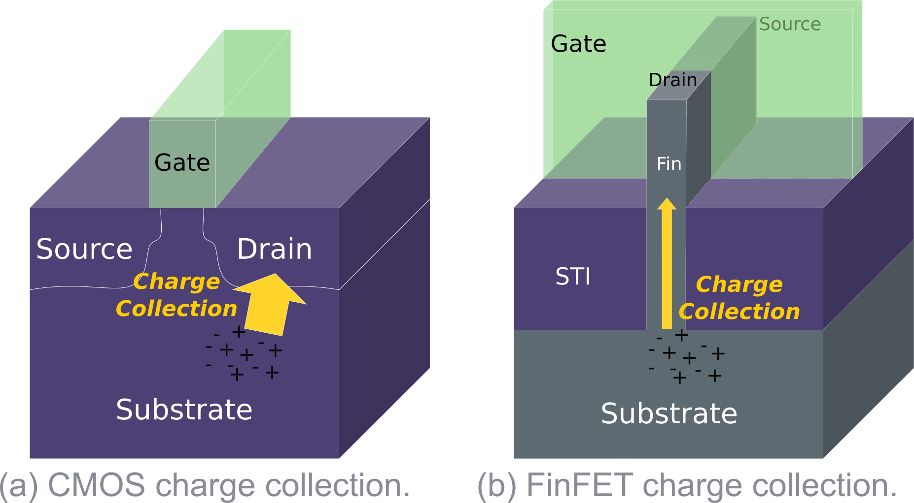
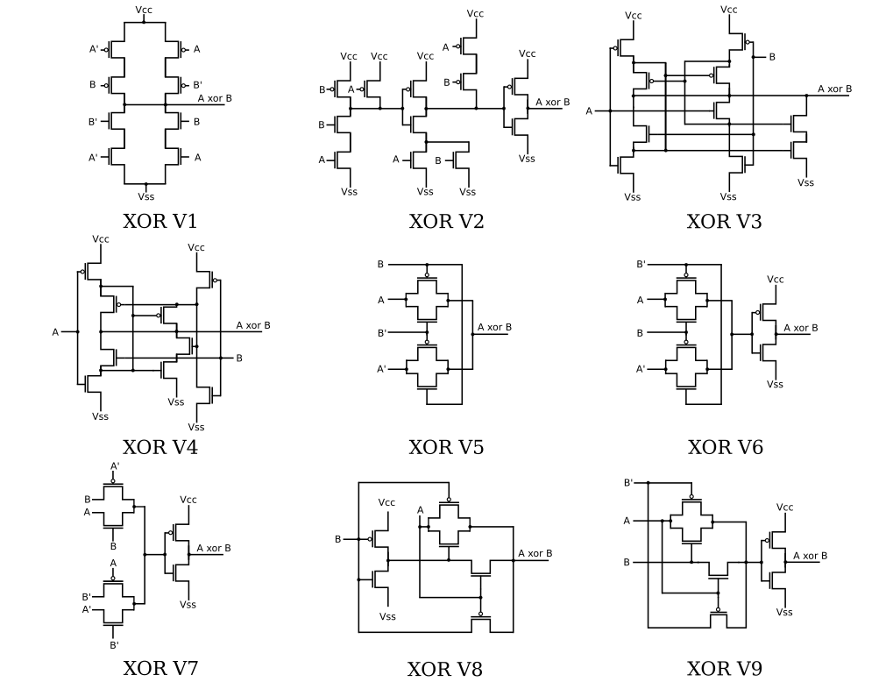
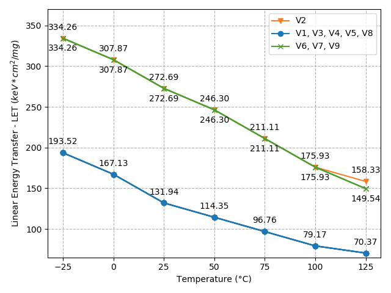
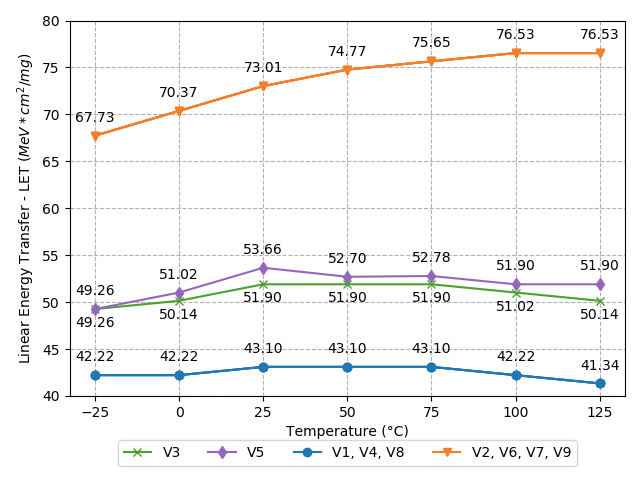
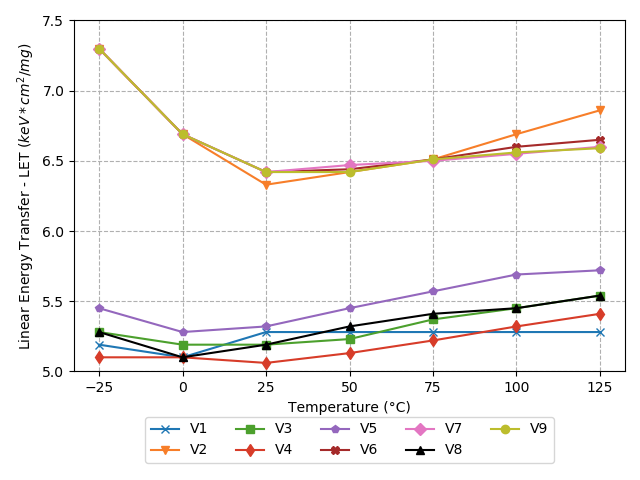
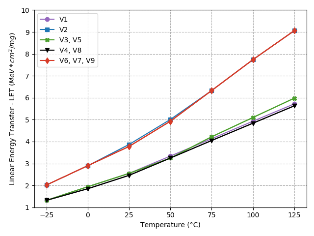

With the advance of computer systems, XOR gates design became essential to the arithmetic circuits. At nanometer nodes, despite the electrical characterization, designers must consider soft error impact on the circuits. The challenges change significantly as feature sizes are smaller, even for FinFET devices. The Single Event Transient (SET) and their effects are dependent on the circuit topology.
In traditional planar devices, charges associated with the ion tracks colliding the silicon substrate are deposited in the drain directly and then diffuse to the drain, as shown in Fig. 1 (a). On bulk FinFET devices, the thin fin region has a tight connection to the substrate of the bulk FinFETs. This reduces the area of silicon available for the charge collection when compared with planar devices. In this case, less deposited charges will be diffused in the FinFET drain as illustrates Fig. 1 (b). For these reasons, the FinFET devices are considered less sensitive to soft errors.

Thus, in this work, we evaluate the SET susceptibility on nine XOR topologies, shown in Fig. 2. The main goal is to discuss the influence of logic family, device technology and temperature, on the radiation robustness. Also, this work explores the nominal and near-threshold operation of these XOR topologies.

Results show that FinFET devices are significantly more robust to the radiation effects. Also, most PTL logic XORs topologies present about 40% of the increase on the LET threshold. The dependence of temperature aggressively impacts the FinFET technology devices operating at near-threshold. Finally, the complete set of information provided in this work supports designers in choosing the most appropriate XOR topology according to the specific design requirements.



